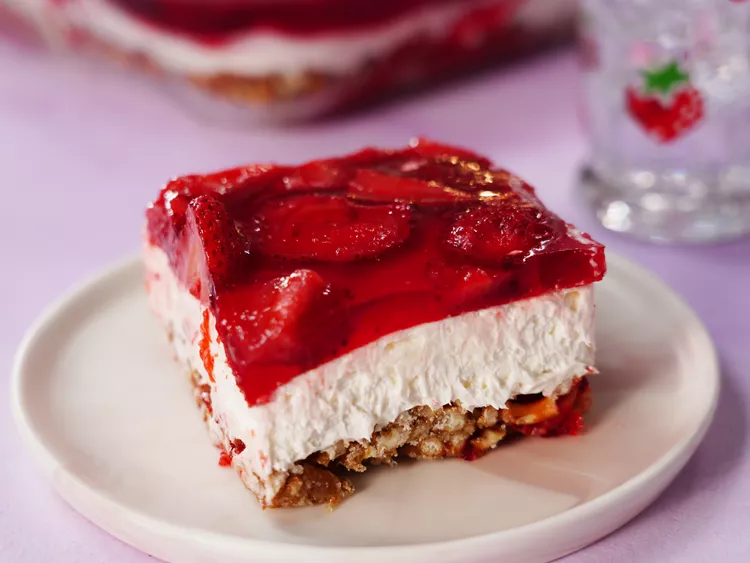
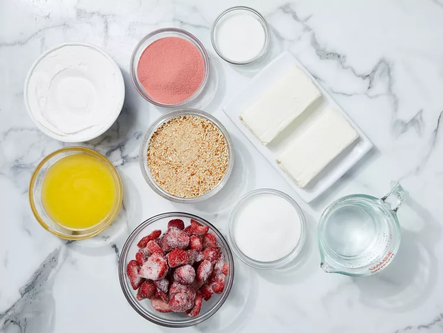
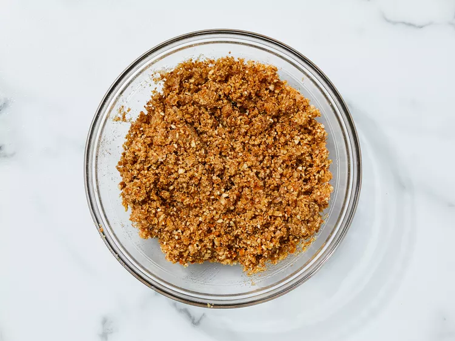
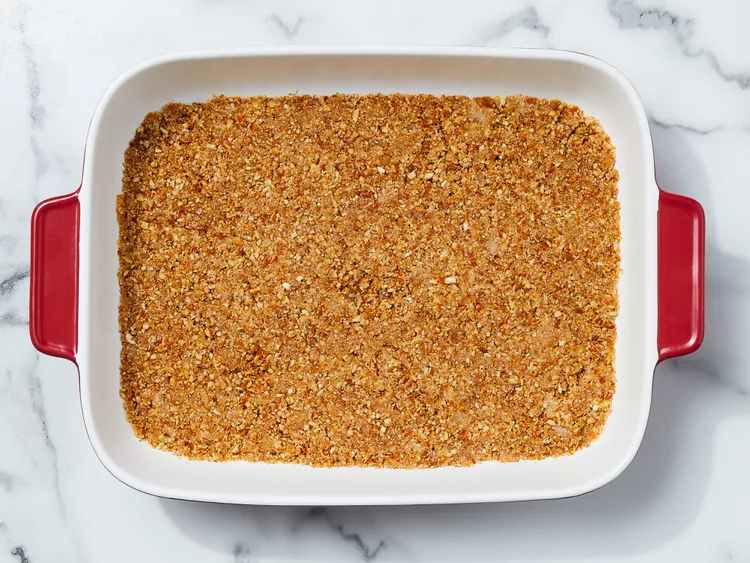
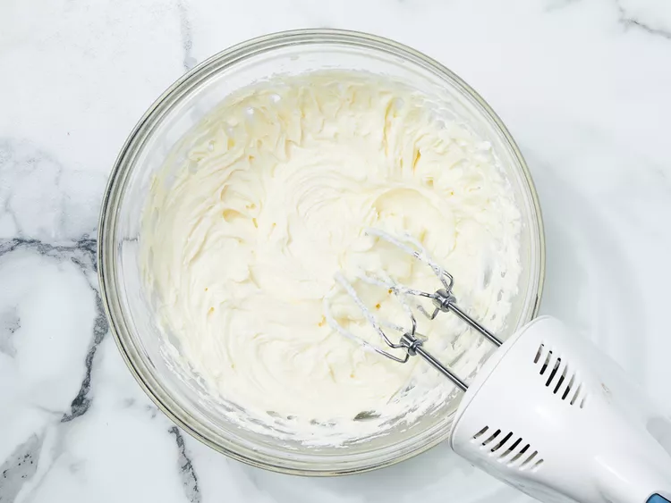
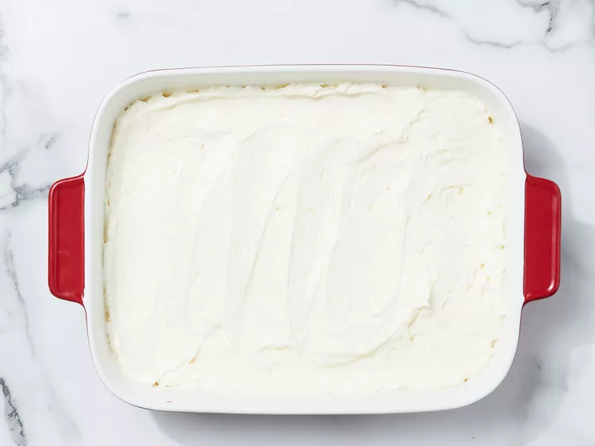
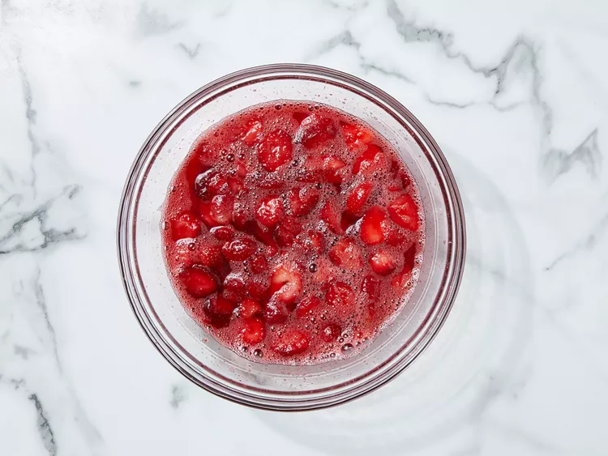
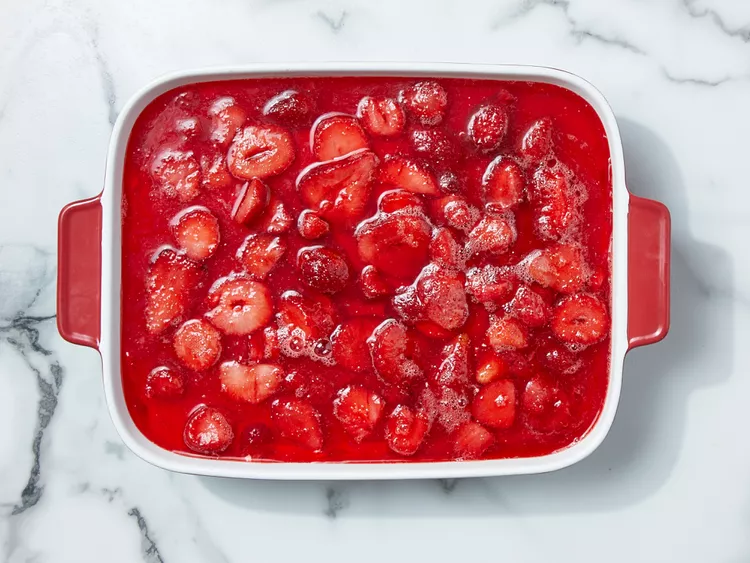

Strawberry Pretzel Salad

Description
This three-layer strawberry pretzel dessert salad includes a pretzel crust, cream cheese center, and strawberry top.
Ingredients
- 1.5 cups crushed pretzels
- 0.75 cup butter, melted
- 4.5 tablespoons white sugar
- 2 (8 ounce) packages cream cheese, softened
- 1 cup white sugar
- 1 (8 ounce) container frozen whipped topping, thawed
- 2 cups boiling water
- 1 (6 ounce) package strawberry flavored Jell-O
- 1 (16 ounce) package frozen strawberries
Steps to make
- Gather ingredients, and preheat the oven to 350 degrees F (175 degrees C).

- Mix together pretzels, melted butter, and 4 1/2 tablespoons sugar in a medium bowl until well combined. Press into the bottom of a 9x13-inch dish.

- Press into the bottom of a 9x13 inch pan. Bake for 10 minutes, or until lightly toasted. Set aside to cool completely.

- In a medium bowl, beat the sugar and cream cheese until smooth.

- Fold in whipped topping and spread evenly over the cooled crust. Refrigerate until set, about 30 minutes.

- Stir together boiling water and gelatin mix in a second large bowl. Mix in frozen strawberries; stir until thawed.

- Pour over cream cheese mixture in the dish. Refrigerate until completely chilled, at least 1 hour.

- Refrigerate until completely chilled, at least 1 hour. Slice and enjoy!